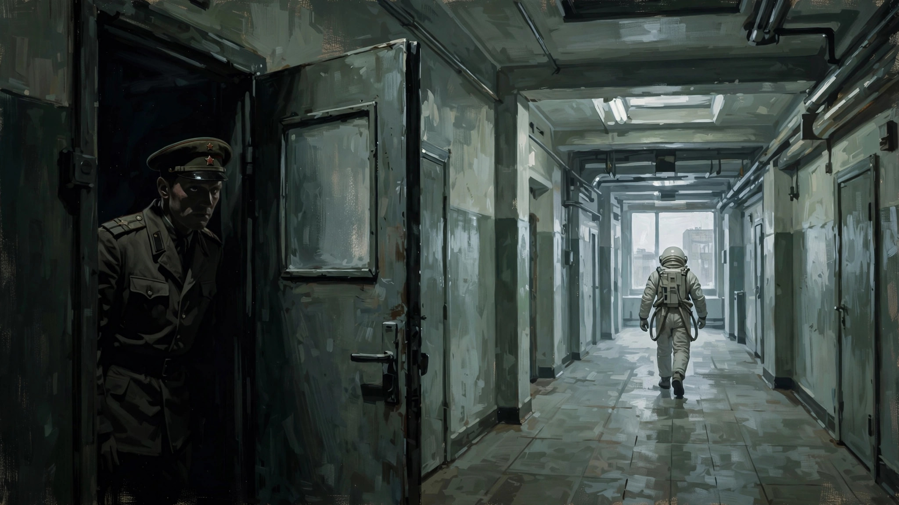
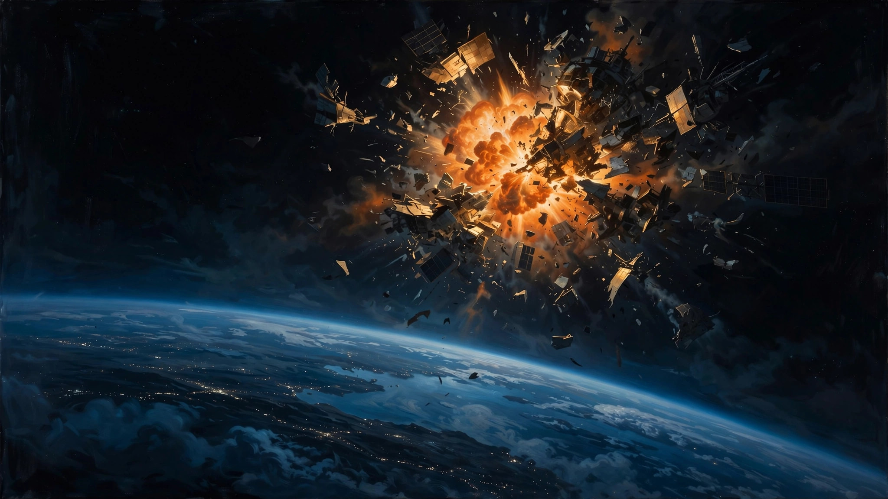

另一种电车难题，在人性之恶下已然不算难题
欢迎点击上方名片关注我。您的支持是我坚持原创的最大动力。
前不久为《为全人类》第五季某集中的“搬道叉”难题写了篇剧评，没想到不久后就如同Dejavu般在另一部关联剧中看到了类似情景。与《为全人类》不同的是，这个关联剧中的类似情景给我带来的更多是震惊和难过。下面就来聊聊这部全新推出的《为全人类》的姊妹篇《星城》，可以简单地把它理解为“《为全人类》宇宙”中苏联视角的故事。（以下会有剧透，请谨慎阅读）
《星城》的设定和时间线和《为全人类》基本相同（我怀疑两个剧组的主创是同一个团队，或者是同一个投资人），也是讲平行时空中的美苏太空争霸史，以苏联率先载人登月作为起点，继而是月球基地，火星基地、小行星开采等不断进行的太空开发竞争。最大的不同是，《为全人类》是美国视角，而《星城》是苏联视角。
《星城》的整体色调灰暗阴郁，给人很压抑的感觉。反观《为全人类》总体上一直是激昂向上的风格（虽然后期也有一些争斗）。之所以有如此鲜明的差别，是因为此剧聚焦的不是太空探索，而是邪恶制度下的邪恶人性。太空探索在此剧中更多起到的是背景板的作用，展示了苏联星城（对应美国的NASA）在太空探索方面的成就，包括首个太空人（加加林，一笔带过）、首次载人登月、探索建立月球基地。此外，太空探索成就中还埋藏了一条暗线，载人探索金星（在现实宇宙中苏联只是成功向金星发射过探测器）。虽然这些成就看上去很耀眼，但在本剧更多着墨的人性之恶面前却显得可笑的微不足道和违和，同时也让人对在如此高压环境下仍然为人类科学进步做出杰出贡献的苏联科学家尤为敬佩。
在接着讲剧情之前，先要声明一下，以免有人抬杠。这部剧集毕竟是虚构作品，而且是美国人拍给美国人看的（至少是为美国观众写的，剧中全员说英语），所以对于剧中的苏联制度多少会有点抹黑、夸张的成分。但从客观历史上看，苏联的确做过很多臭名昭著的事，KGB、古拉格等等这些“邪恶之花”想必很多关注苏联的人都耳熟能详了。所以可以认为本剧是基于史实的文学创作，引人思考的批判多于立场优先的抹黑。

本剧我刚看到第六集，后面还有两集。但第六集结束时有个小高潮，也就是我开头说的，出现了另一种“搬道叉”情景。所以我先不看后面两集，来谈谈截至第六集的观感。
具体情节就不展开细讲了，先简单介绍下两条主要情节线及涉及的主要人物。
第一条情节线是航天线，主要人物是星城总设计师。他是苏联航天事业的灵魂人物，首个太空人、载人登月项目以至进行中的载人金星探索项目都是他一手主导的。这种科学界领军人物代表了一个国家科技的最高水平，但也不同于牛顿、爱因斯坦之类划时代的理论科学家，与之更贴切对应的应该是冯布劳恩、奥本海默这样负责重大科学应用项目的人物。但在苏联体制下，这位总设计师无论是地位、权限还是自由度方面都远不及他的美国同行。相反，他时时受到监视、处处受到掣肘，以至于最后因为良心未泯维护同事而遭到逮捕。
航天线的其他主要人物包括两对宇航员夫妇（以下为叙述方便分别称为宇航员A、宇航员A妻、宇航员B和宇航员B妻）。这两对夫妇中有三个是精英级别的宇航员，都登上过月球。为什么把他们放在一起说，是因为他们的婚姻居然是组织上安排的。这还不是最离谱的，他们中本有一对是情侣，却硬生生被组织拆开，重新与他人婚配（即A与B妻原是情侣）。至于组织为什么这么安排，一方面是为了解决其中一个精英宇航员的单身问题，另一方面是组成所谓金童玉女便于宣传。总之一切服从组织需要，个人的感情需要是不存在的。
另一条情节线是间谍线，主要人物是一名克格勃女上校。此人阴险毒辣，为达目的不择手段，打击异己和她眼中的“敌人”绝不手软，是典型的邪恶体制下的酷吏。本文要讲的另一种电车难题，就是她一手导演的（下文会讲）。她常驻星城，主要任务是打击美国针对星城的间谍活动和揪出自己人当中的“叛徒”。表面上她和星城总设计师是平级的同事，有时甚至还假装让后者三分。实际上她俨然是星城的“太上皇”，仗着克格勃撑腰，她掌握着星城所有工作人员（甚至包括总设计师）的生杀大权。这条线的另外一个人物是女上校手下的一名女监听情报员，主要负责监听星城的工作人员（主要是宇航员及其家人），以及早发现“异己分子”。此女虽然是酷吏部门的工作人员，但尚存做人的基本良知。她后来冒着生命危险救了一位朋友（即上面提到的宇航员B妻）。
交代完人物和主线背景，我们直接来到第六集，来看看令人震惊的另一个电车难题是怎样形成的。
事情起因是女上校收到风，美国间谍已经渗透到了星城内部，但还没锁定到个人。女监听员偶然结识宇航员B妻。B妻主动提出教女监听员的女儿弹钢琴，一来二去两人成为好朋友。好巧不巧，宇航员B之前被美国间谍盯上，并通过威胁杀害其妻的方式将其策反。女监听员起初不知道B妻的身份，后来知道后出于职业敏感开始留意她家的蛛丝马迹。终于在某一天，女监听员确认宇航员B就是被策反的宇航员。于是她陷入了痛苦的内心挣扎。一方面，她是情报部门的监听员，有义务向上级报告这么重要的线索。另一方面，她和B妻在短时间内建立了深厚的友谊，B妻对其女的悉心教导和对她的善意让她不忍让她一家陷入万劫不复的悲惨境地。经过一番短暂的思想斗争后，女监听员下定决心救B妻。但她能力有限，只能救B妻一个人，而且需要以牺牲宇航员B为代价。
女监听员做好了周全的准备，安排B妻到一个指定的地方暂避，然后再想办法帮她出境。女监听员的策略是，向上级举报宇航员B，这样资源就投入到全力抓捕B上面，而暂时没人会注意他的妻子，从而有利于安排他妻子出逃。但她没想到的是，接下来事情的走向发生了很大的变化。
B妻在得知消息后，虽然很震惊，但很快冷静下来听从了女监听员的安排。她此时相信女监听员是出于真实的友谊来冒险帮她的。可当B妻来到女监听员安排的“安全屋”时，却无意在屋内看到一张女监听员和一些KGB官员的合影，B妻感觉自己被欺骗和利用了，再也不相信女监听员。她马上离开安全屋去找丈夫宇航员B，通知他快逃。还好她在KGB抓到她丈夫之前赶到。宇航员B急中生智，用一着极其聪明而冒险的手段躲过这一劫。
正当KGB封锁星城大肆搜捕宇航员B时，他打晕了正准备登上秘密金星任务舱的另一名宇航员，并将其藏起来。然后若无其事地出现在总设计师面前，并在“得知”金星任务因为一名乘员（即前面被打晕的那位）的意外迟到而可能被迫取消时，“毛遂自荐”顶替该乘员完成金星任务。总设计师当然喜出望外，因为宇航员B是资深宇航员，他能及时顶上，这次秘密金星任务的成功率又提高了一大截。哪有这么好的事，想睡觉来一枕头。于是，他赶紧安排发射事宜。
等女上校率领人马气势汹汹赶到指挥中心时，金星飞船已经发射上天了。女上校得知宇航员B就是乘员之一后气急败坏。她顾不上追究总设计师不经上级同意策划并最终实施载人金星探索计划的重大责任，一心一意琢磨怎么先把宇航员B的事解决了。（足智多谋——划掉）阴险狡诈的她马上想了一个对付宇航员B的毒招。但实施这个毒招首先需要总设计师的配合。总设计师刚开始坚决不愿意掺和这缺大德的事儿，但考虑到整个金星任务的大局（希望女上校不会干涉金星计划的继续进行），他只能同意。
女上校的毒招是，先把宇航员B骗到一个单独的服务舱去（假装让他去进行什么常规操作），然后通过另一名飞船乘员的家属和该乘员通话的方式让该乘员执行一段指令，锁死服务舱，从而实现对宇航员B的隔离控制。但实现这个毒招有一个难点，就是传送的任何指令宇航员B都能马上听懂，他听到要锁死服务舱当然不会乖乖就范。女上校继续发挥她那专门用来整人的“聪明才智”想出一招，不让他听懂不就得了。接收指令的乘员是印度裔，让她丈夫来跟她用印度语通话，这样就能确保在宇航员B听不懂的情况下传达锁死服务舱的指令。
于是，事情按照女上校的设想完美实施了，宇航员B果然被隔离在了锁死的服务舱中，相当于对他完成了抓捕。你以为接下来的发展会是，金星飞船继续完成金星探索任务，等待返回地球后再对宇航员B进行审判定罪？那你就太善良和天真了，说明你对邪恶体制下邪恶帮凶的恶一无所知。女上校接着下的命令就是直接中断服务舱的氧气供应，什么审讯、审判、定罪啦，对于“敌人”都没有必要，直接处决就是了。
总设计师和指挥中心的工作人员虽然一脸震惊，但在女上校的武装威吓下也不得不向飞船下达指令。飞船上一共三名宇航员，宇航员A、B及一名印度裔女宇航员（下面称C吧）。B被隔离关押后，A、C从地球指挥中心大概了解了情况，虽说一时难以接受但也没说什么。但当收到等同于立即处决B的指令后，A和C坚决不同意。首先他们不相信B真的犯了叛国罪，其次他们根本无法接受这种不经审判直接杀人的无底线做法，更何况企图杀害的还是和他们一起经历生死考验的战友。
这时的女上校可以说是完全丧失了理智。既然你们不执行命令，那就别怪老娘不客气了。于是她悍然下达了中断整个飞船氧气供应的命令。整个指挥中心一片哗然，总设计师更是出离愤怒。这老巫婆的一声令下的后果是什么？以举国之力建立的星城培养的三名资深苏联宇航员、顶尖科学家惨死太空，同时这么多年来倾注无数科学家心血的金星载人探索计划在瞬间灰飞烟灭。这疯批程度绝对已经超越了正常人类的想象力了。
于是，一道“电车难题”就这样意外地摆在了星城指挥中心全体人员的面前。执行命令就是上面的后果，可以说对苏联宇航事业造成的打击是毁灭性的。不执行的话，以老巫婆的疯批程度，把整个指挥中心的人全部突突了也不是做不出来的事。总设计师当然坚决拒绝执行命令，没有谁比他更了解这么做的后果有多严重。女上校为了杀鸡儆猴立刻命令克格勃人员逮捕了总设计师。虽然她的行政级别不一定比总设计师高，但此时的她等同于拿着“尚方宝剑”，是有“先斩后奏”的权力的。至于总设计师被带走前说的那句“you are a monster"（你是个魔鬼），女上校简直当作恭维了。
最终，工作人员迫于丧心病狂的女上校的淫威执行了命令。宇航员们试图自救切断通讯，但可悲的是没能成功，第六集最终以飞船爆炸惨烈收场。我之所以在第六集这里停下，是想先对比、讨论下这里的电车难题和我在之前关于《为全人类》那篇文章提到的形式类似但性质截然不同的另一个电车难题。

如果你仔细看过那篇文章，再来看看这篇，就不难发现这两个电车难题的本质不同。在《为全人类》里，电车难题是关于拯救正义的多数人（追求独立自由的火星移民）和拯救邪恶的少数人（全副武装的入侵者）之间的抉择。而在《星城》里，则纯粹是善和恶的抉择。以总设计师为代表的星城指挥中心的工作人员和飞船上的宇航员A、C代表了有良知的人类善的一面，而为了立功并让上级刮目相看而不择手段、毫无人性底线的女上校则代表了人性中最阴暗、最邪恶的一面。所以后一种电车难道，与其说是难题，不如说是善恶之间的一场终极较量。至于谁胜谁负，那要看天意。虽然虚构作品里作者可以预先安排结局， 但宇宙中并不存在善一定会战胜恶或者反之的规则。
而对于我们普通人来说，这类电车难题的真正意义仅在于，我们是否能明辨是非、分清善恶。